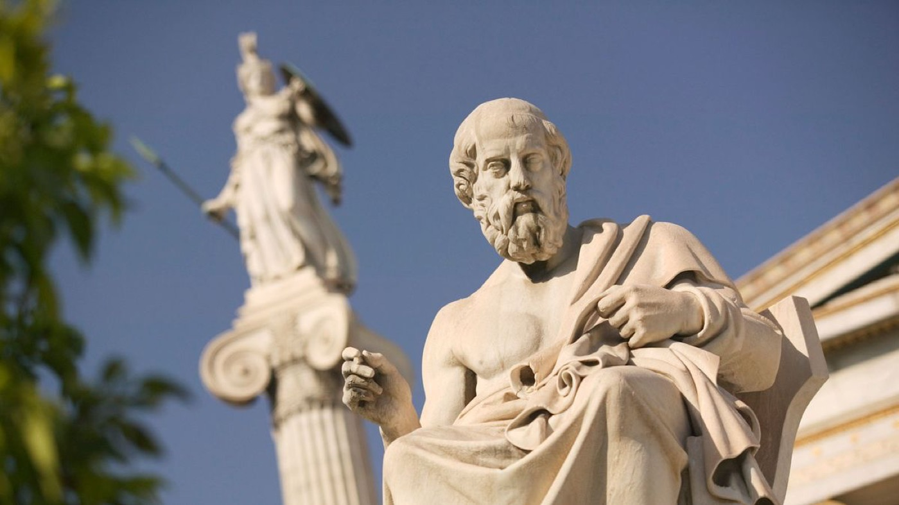
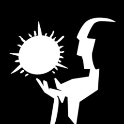

EMS ProtoQuiz
Training built from your agency's own protocols.
Treatment 01
Your logo is already white on black, so it does not need a box. Masked at the edges it dissolves straight into the page. This is the single biggest upgrade available and it costs nothing.
We learn more from each other than we can by ourselves.
Treatment 02
The Plato photo is 1200px and sharp, and currently unused. Desaturated and dimmed, with the bottom dissolving into the page ground so it has no hard lower edge.

Treatment 03
Edge to edge, heavily dimmed, with type on top. Ties the About page back to the Reading Room. The most dramatic option.
The unexamined life is not worth living.
Treatment 04
Same rows shipping now, but the bordered tiles are gone. Artwork sits directly on the page and scales gently on hover. Compare with the live site: the boxes were doing nothing but adding edges.
Training built from your agency's own protocols.

Share wisdom anonymously. Everything disappears monthly.

Sleep education written for people who work nights.
Treatment 05
Starts blurred and dark, then sharpens as it enters view. Scroll it out and back to replay. Combines with 02 or 03.